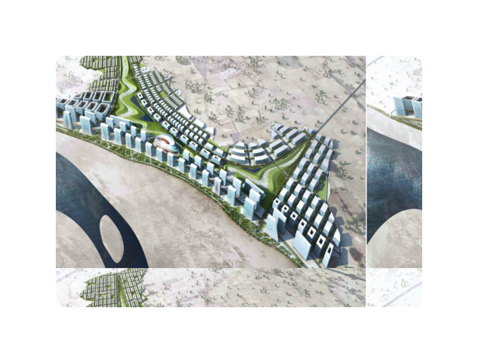
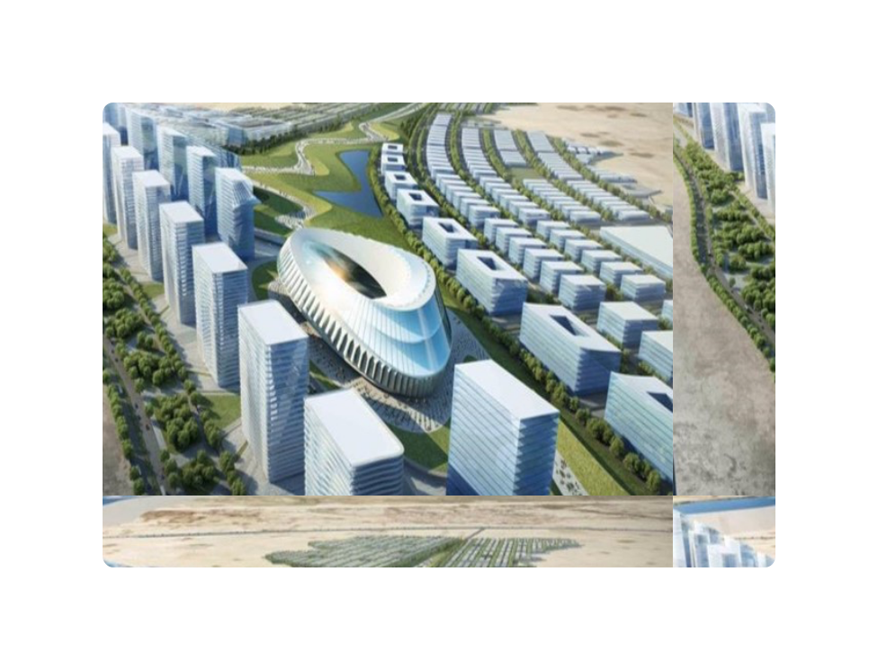
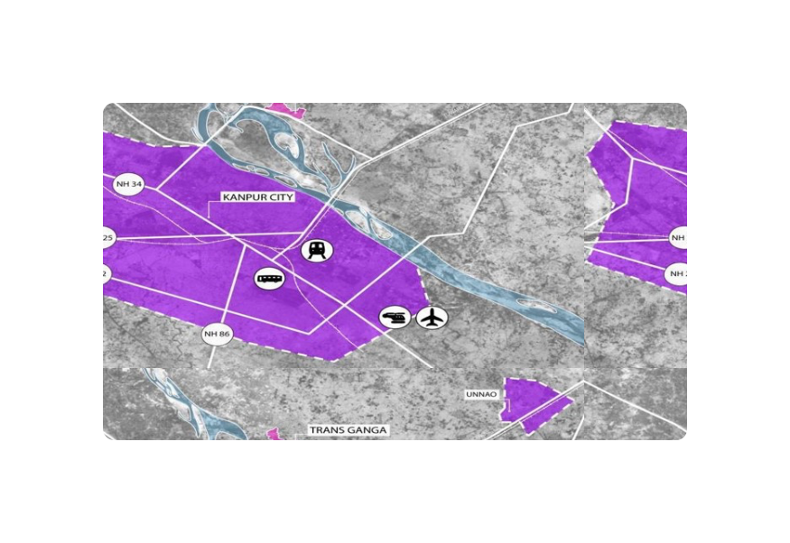
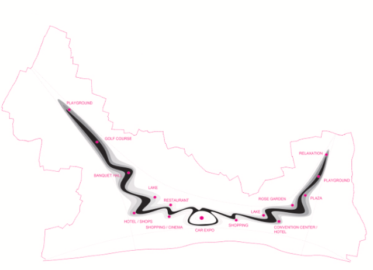
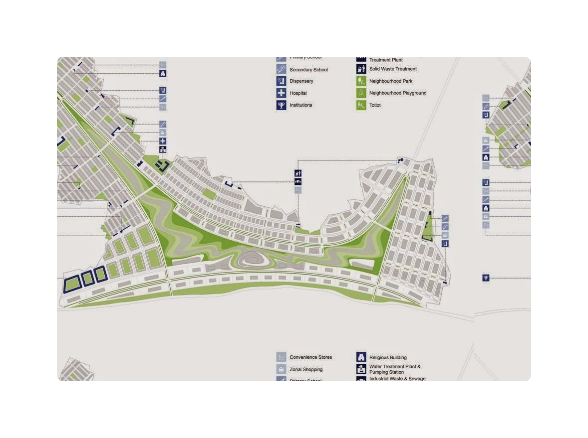

Trans Ganga Project is spread over 1144.1 Acres of near Kanpur.
Current Rate 10850 INR/Sq. mtr. for industrial & 18000 INR/Sq. mtr. for
residential.
Trans Ganga City is being developed as an Industrial Model Township with
industrial, residential and commercial sectors. Situated within burgeoning
belt of Kanpur and Lucknow zone.
Being developed as an Industrial Model Township with industrial,
residential and commercial sectors.
Situated within burgeoning belt of Kanpur and Lucknow zone.
Land Earmarked for flatted factories
Location
Latitude, Longitude - 23.43718, 87.25307 (Click to view map)
Scroll down

USPs of project
The city design has been planned at two levels. First, with the design
level elements required to make the city sustainable. Second, the
implementation of green roof, earth cooling, solar panels, ground water
recharge & waste management.In heart of the project, an iconic auto expo
mart is planned, making it a prominent visual marker. An amalgamation of
cluster with various project based activities creating a functionally
rich urban plaza.
The features of project are
Provision of 24x7 power supply.
International design standard.
Provision for mall, exhibition centre, golf course, commercial,
residences and retail shops.
Beautiful landscape with water bodies.
Ample green spaces.
Moderate and ambient temperature.
Self-sufficient in terms of water supply and sewage.
Multiple choices for industrial, commercial & residential areas.
Planned commercial, residential and elementary infrastructure for
industrial units.
Utility infrastructure of water supply, roads, drains, street light.
Emergency infrastructure of police and fire stations.
Independent overhead water tank to provide uninterrupted water supply.
Ample parking facility with greenery in the area, providing a healthy
surroundings.
Iconic towers to be designed along the Ganga riverfront.

Investment Opportunities
Industrial
Two distinct types of land parcels are proposed, flatted factories
and industrial plots. The total area of Industrial Land available is
appox. 9,71,246 Sq. Mt. (240 Acres).
Industries in the enclave will be pollution free (zero liquid
discharge zone)
Proposed industries include Food Processing, MSME’s such
asEngineering Goods, Assembly Units, Leather (Non Polluting)
,Textiles Garments and ESDM industries.
Residential Units
With ever burgeoning demand on residential infrastructure in Delhi
NCR people will be naturally attracted with job opportunities and
connectivity to Delhi.
Smart city concept will make life easier and quality of life will
improve.
With transit time lessening, work life balance of society will
improve, giving rise to a healthy population.
Commercial
Aims to be a self-sustained city with commercial establishments such
as shopping complexes, malls, theatre, multiplexes, restaurants,
auto showrooms, hotels, auto expo centre and other commercial
establishments. The area will also have a special golf course for
recreational purposes.
Institutions
Universities training & skill development centres to make this zone
an attractive destination for investments. It consists of three site
for educational institutions to develop the zone as a world class
education hub having facilities from primary schools to post
graduation level.

Facilities and infrastructure
Situated at a distance of approx. 75 kms. from Lucknow Airport & Kanpur
Rail Station (approx. 10 Km).
State-of-the-art infrastructure with Wide open roads, solar powered
light ,modern Auto Expo-mart ,Exhibition centre, multiplexes, mega
malls, parks & group housing society.
Provision for additional facilities include modern Auto Expo-mart, Golf
Course, ample Green zones, Exhibition center, multiplexes, mega malls,
parks & group housing societies.
Land Use
Area in Acres
Residential
157.32
Industrial
145.61
Institutional(ins)
29.42
Commercial/ mixed use
110.12
Land Use
Area in Acres
Green/Water body
271.22
Amenities
78.62
Roads
290.46
Reserved for Formar's
61.27

TransGanga City Layout

Location Advantage
3 Km from Ganga Barrage at Kanpur.
10 Km from Kanpur central railway station.
21.2 Km from Unnao.
Located on Sitapur - Kanpur Road (NH-91 Bye Pass).
11 Km from Lucknow - Kanpur highway (NH-25).
75 Km from Lucknow airport.
Situated on Delhi-Howrah railway route.
About 30 km from Bhaupur, upcoming Eastern Dedicated Freight
Corridor (EDFC) station.
Close proximity to the State capital Lucknow
Alloted plots (in units)
Industrial 15
Residential 1231
Vacant plots (in units)
Industrial 166
Residential 829
TransGanga City on Google Map
UP Industrial Policy 2017 Highlights
The features of project are
Stamp duty exemption of 75% in Madhyanchal
EPF reimbursement facility to the extent of 50% of employer’s contribution to all such new Industrial units providing direct employment to 100 or more unskilled workers.
Capital Interest Subsidy to the extent of 5% per annum for 5 years in the form of reimbursement on loan taken for procurement of plant & machinery, subject to an annual ceiling of INR 50 lacs.
Infrastructure Interest Subsidy to the extent of 5% per annum for 5 years in the form of reimbursement on loan taken for development of infrastructural amenities for self-use like roads, sewer, water drainage, erection of power line, transformer and power feeder, subject to an overall ceiling of INR 1 Crore.
Interest subsidy to the extent of 5% per annum for 5 years in the form of reimbursement on loan taken for industrial research, quality improvement and development of products by incurring expenditure on procurement of plant, machinery & equipment for setting up testing labs, quality certification labs and tool rooms, subject to an overall ceiling of INR 1 Crore.
Exemption from electricity duty to all new industrial units set up in the state for 10 years.
Exemption from electricity duty for 10 years to all new industrial units producing electricity from captive power plants for self-use.
Exemption from Mandi fee for all new food processing units on purchase of raw material for 5 years.
The industries which are disallowed for input tax credit under the GST regime, will be provided reimbursement of that amount of VAT/CST/GST paid on purchase of plant and machinery, building material and other capital goods during construction and commissioning period and raw materials and other inputs in respect of which input tax credit has not been allowed.
Units generating minimum employment of 200 direct workers including skilled and unskilled will be provided 10% additional EPF reimbursement facility on employer’s contribution.
All incentives in the form of reimbursement, subsidies, exemptions etc., will be subject to a maximum of 90% of fixed capital investment made in Madhyanchal region.
The eligibility requirements for the respective categories are as follows:
Category
Minimum eligibility requirements (Madhyanchal)
Mega
Capital investment of more than Rs.150 crore but less than Rs.300 crore OR Providing employment to more than 750 workers.
Mega plus
Capital investment of more than Rs.300 Crores but less than Rs.750 crore OR Providing employment to more than 1500 workers.
Super Mega
Capital investment of more than Rs.750 Crore OR Providing employment to more than 3000 workers.
The incentives will be applicable for new units as well as projects under expansion/diversification. Projects in the mega categories (mega, mega plus and super mega) will be processed on a case to case basis for finalising the incentive structure.
All incentives for mega investments in the form of reimbursement, subsidies, exemptions etc., will be subject to a maximum of 200% of fixed capital investment made in Madhyanchal region.
The Conditions for (12.) are as follows:
Units availing incentives from any other policy or those sanctioned by the departments of the State government, will also be entitled to avail incentives/benefits mentioned in this policy provided the same kind of benefits/incentives are not being availed from any other policy. If a unit avails any incentive under industry specific policies like Agro & Food Processing Policy, IT Policy etc., it will not be provided incentive of similar nature under this policy.
A negative list of industries will be identified which will be ineligible for any incentives mentioned in this policy. However if any package of incentives has already been committed by the state government to any such unit before the industry was declared negative, the committed incentives will not be withdrawn and the unit will continue to remain entitled to the benefits.